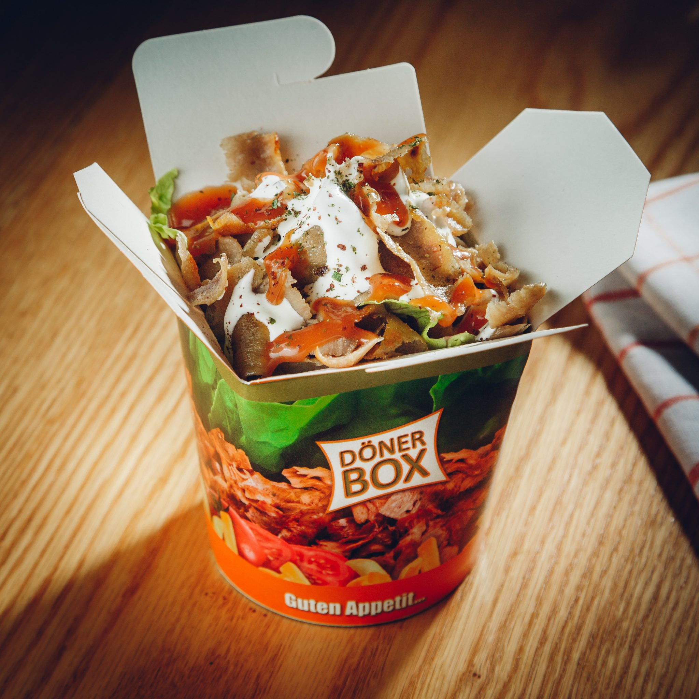

Dönerbox

Een doner box, ook wel bekend als een doner kebab of shawarma box, is een soort fastfood dat oorspronkelijk uit het Midden-Oosten komt en inmiddels populair is geworden in veel landen over de hele wereld. Het wordt meestal gemaakt door vlees, zoals lam, kip of rundvlees, op een spit te grillen en het dun te snijden om het te serveren in een pitabrood of platbrood. Het vlees wordt vaak vergezeld van groenten, zoals sla, tomaat, ui en komkommer, evenals sauzen, zoals tzatziki of hummus. Doner boxes worden meestal als take-out of straatvoedsel geserveerd en worden vaak verkocht op kraampjes of foodtrucks. Het zijn een praktische en betaalbare maaltijdoptie en worden vaak gegeten als tussendoortje of licht maal. grgrg